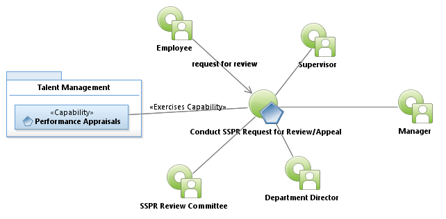
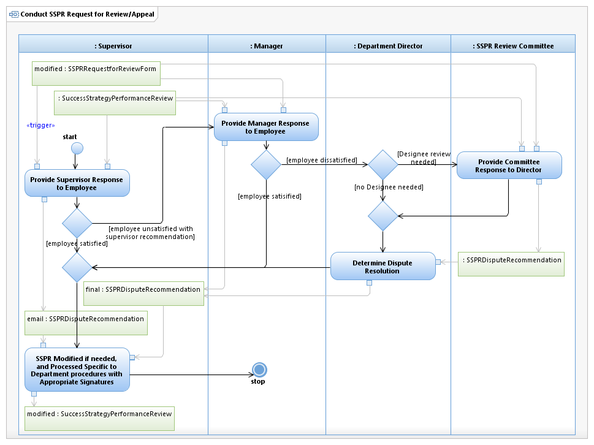

Use Case Model: Conduct SSPR Request For Review/Appeal
Architect: Aaron Brown, IT Enterprise Architect Senior
Date Last Modified: 09/13/2012
User Review: Mike Hockmuller
Date: 11/27/2012
If an Employee requests a review of their SSPR document, this request is assessed by the immediate supervisor and a resolution is offered. If the employee agrees to the resolution, the process ends. If the employee disagrees they may request a second-level review be performed by the second level supervisor. If employee agrees to the resolution the process ends. If the employee disagrees, they may request a director review. The resolution provided by the department director is final. The director may engage an SSPR Review Committee to assist with reaching a decision.
Follow link to Role Definitions

Use Case Model: Conduct SSPR Request For Review/Appeal

Activity Model: Conduct SSPR Request For Review/Appeal